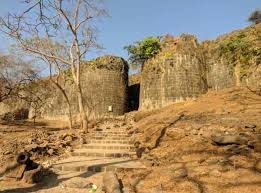

मंदंगड किल्ला
Location : Click Here For Google Map
- माहिती
- मंदंगड किल्ला महाराष्ट्र राज्याच्या रायगड जिल्ह्यात स्थित एक ऐतिहासिक किल्ला आहे. हा किल्ला रायगडपासून अंदाजे ७५ किमी अंतरावर स्थित आहे. मंदंगड किल्ला मराठा काळातील एक महत्त्वाचा किल्ला होता, जो त्या काळात सामरिक दृष्टिकोनातून महत्त्वाचा होता. किल्ल्याचे संरक्षणात्मक बांधकाम, दरवाजे, बुरुज आणि किल्ल्याच्या भिंती यांचा पुरावा आजही त्याच्या अवशेषांमध्ये दिसून येतो.
मंदंगड किल्ल्याची रचना साधारणतः किल्ल्याच्या भिंती, गड, बुरुज यांचा एक सुंदर समावेश करते. किल्ल्यावरून एका विस्तृत प्रदेशाचे अप्रतिम दृश्य दिसते, ज्यामुळे पर्यटकांना निसर्गाची आनंददायक अनुभूती मिळते. किल्ल्याच्या आसपास असलेल्या लहान डोंगर रांगा आणि नद्या यांचे दृश्य खास आहे.
आजकाल, मंदंगड किल्ला पर्यटकांसाठी एक आकर्षक गंतव्य ठरले आहे. किल्ल्याच्या ऐतिहासिक महत्त्वामुळे आणि निसर्ग सौंदर्यामुळे, याचे आकर्षण वाढले आहे. किल्ल्यावर चढाई करण्यासाठी पर्यटक येथे येतात, जे त्यांच्या साहसी अनुभवासाठी उत्तम आहे.
Explore the historical beauty
